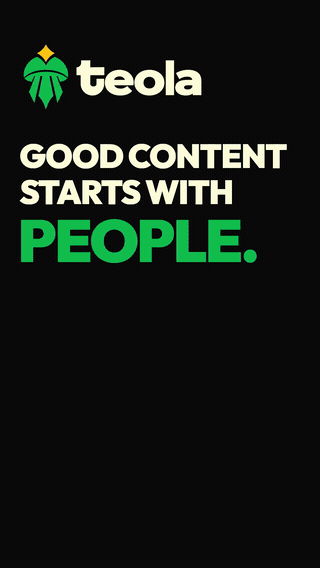
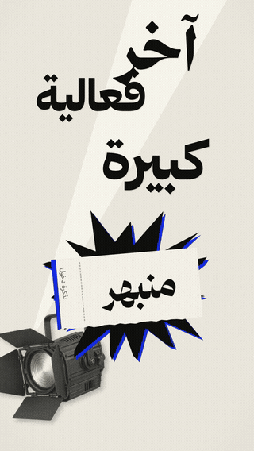
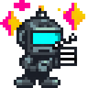
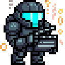
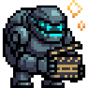
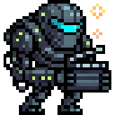
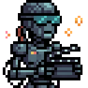

Real copy, real assets, real claims, brand rules and reference material before a single keyframe moves.
20 Production Skills · Claude Code & Codex
Give your AI agent a motion director
20 skills for Claude Code and Codex that turn a brief into art direction, editing, choreography, review and render-ready motion HyperFrames handles the machinery
FRAME 184
art direction before animation
DIRECTOR WISDOM
motion-director
"Geometry is measured, taste is reviewed."
1 / 6
Every frame is code. The taste is not.
Most AI video workflows ask for clips
This teaches the agent how to think between the frames
A spotlight becomes a clock. A plan becomes a stage. A word becomes the next layout. Motion has a reason.
Hierarchy, typography, material, depth, Arabic shaping, pacing and negative space are part of the build, not a cleanup pass.
HyperFrames owns the production machinery when it should. Existing runtimes are preserved when rebuilding would add no value.
Contact sheets, timecoded critique, phone-size checks and a hard anti-slop gate before the final export.
Creative brain
Production engine
The split is deliberate. One decides what the film should become. The other makes the timeline reproducible.
Motion Director
- Concept and narrative
- Art direction
- Typography and composition
- Motion thesis and choreography
- Arabic and RTL direction
- Creative QA
HyperFrames
- Deterministic timeline
- Registry and reusable blocks
- Adapters and diagnostics
- Preview and snapshots
- Audio relationships
- Final render and variants
The skill builds what it teaches
Not mockups of motion. Actual renderable compositions, reviewed as films.


It knows when to stop being clever
The system carries its own taste checks. If an effect adds complexity without meaning, hierarchy or continuity, it loses.
No card soup
No transcript wallpaper
No 3D for 3D's sake
No fake dashboards
No Arabic fallback
No renderer reinvention
No busy ending
Twenty skills
one direction system
Start broad with the director, then route into editing, building, publishing or review without losing the same creative contract.
01
DIRECT
motion-director
Master direction
Concept, narrative, reference analysis, motion thesis, production routing and final creative QA.
02
DIRECT
mix-and-match
Reference synthesis
Combine multiple references into an original visual direction with creative-distance checks.
03
DIRECT
brand-intake
Brand system
Build brand.md and MOTION.md before animation starts.
04
DIRECT
motion-brief-writer
Brief architecture
Turn a rough idea into a precise, truth-safe motion build brief.
05
EDIT
jump-cut-pacing
Talking-head pacing
Trim dead air, preserve breaths and plan face-safe jump cuts with intentional reframing.
06
EDIT
speaker-cutout
Presenter compositing
Plan full or PiP presenter layers, background swaps and graphics behind the speaker.
07
EDIT
video-spotlight
Selective focus
Dim the surroundings while preserving the target with timed spatial masks.
08
EDIT
paper-cut-motion
Tactile editorial motion
Build deterministic 12 fps paper-cut, evidence-board and archival collage scenes.
09
BUILD
launch-video
Product launch
Direct 30 to 45 second product, offer and cohort launch films.
10
BUILD
apple-launch-film
Mac-style launch
Build keynote-like product films with native Mac visual grammar.
11
BUILD
vox-explainer
Documentary explainer
Create short editorial explainers with collage, type and evidence-led pacing.
12
BUILD
animated-chart
Data motion
Animate exact supplied values into readable looping charts and stat stories.
13
BUILD
milestone-reveal
Milestone film
Reveal real metrics with restrained particle and typographic motion.
14
BUILD
motion-effects
Motion units
Route named UI, type, data, image, path and reveal effects without rebuilding the engine.
15
BUILD
title-sequence-3d
3D titles
Create cinematic 3D typographic openers when real depth and camera movement matter.
16
BUILD
model-showdown
Comparison film
Render fair side-by-side or stacked comparisons from the same motion brief.
17
PUBLISH
newsletter-promo
Newsletter promo
Turn an edition into a short social trailer that sends viewers to read.
18
PUBLISH
loop-cover
Looping cover
Create a measured seamless animated cover for newsletters and blogs.
19
PUBLISH
reel-export
Vertical delivery
Adapt motion into upload-safe 1080x1920 Reels and TikToks with technical checks.
20
REVIEW
video-review-loop
Rendered-film review
Inspect the actual MP4 or MOV with timecoded technical and visual evidence before signoff.
No skills match that filter. Try a broader term.
Creative direction
Video editing
Kinetic typography
Editorial collage
2D / 2.5D / true 3D
Arabic and RTL motion
Data motion
Reference fidelity
Rendered-film review
Documentation & Guide
mastering agentic motion
From intake to pristine render. Everything you need to direct Claude Code, Codex, and HyperFrames with creative confidence.
v1.1.0 · 20 SKILLS · VIDEO EDITING READY
STEP 1
Install the Skill Pack
One command loads all 20 direction, editing, production, publishing and review skills into your environment. Works natively with Bun and npx.
bunx skills add imMamdouhaboammar/motion-graphics-skills
npx fallback:
npx skills add imMamdouhaboammar/motion-graphics-skills
STEP 2
Intake Your Brand Truth
Before animating a single pixel, run brand-intake. It inspects your real palette, typography, logos, and generates brand.md and MOTION.md.
"Set up my brand for motion. Here are 3 brand assets and our hex codes."
Every other skill automatically reads those two contracts first.
STEP 3
Direct Your First Film
Invoke motion-director. Direct the agent like a human creative director, referencing styles, duration, and visual mechanisms.
"Direct a 30s product launch video for my developer tool from reference to final render."
HyperFrames compiles deterministic timelines; the director reviews the frames.
01
Brand Intake & Evidence Grounding
brand-intakeExtracts colors, logos, typography, voiceover claims, and rules. Never animates against unverified or hallucinated design tokens.
Failure Lesson: "Scenes never fetch during render. One readiness promise gates the first frame."
02
Brief Architecture & Beatboard
motion-brief-writerTranslates goals into timecoded beats, narrative arcs, and audio cues. Computes voiceover ends and reserves the end hold.
Failure Lesson: "Plan the end hold in the beat map. Duration defined once in the composition."
03
Visual Mechanism & Staging
motion-director · specialistsSelects a physical or graphic mechanism (spotlight clock, perspective hallway, origami folding, kinetic typography) instead of arbitrary slide transitions.
Failure Lesson: "Never crossfade two saturated fields. Carry an object, shape a mask, or hard cut."
04
Deterministic HyperFrames Compilation
HyperFrames · WebGL · SVGCompiles into deterministic requestAnimationFrame loops, SVG geometric transforms, and GPU shaders. Zero layout-property animations.
Failure Lesson: "Geometry is measured, taste is reviewed. Arabic dots are part of the letter."
05
Anti-Slop Audit & Film Review
video-review-loop · QA gatesGenerates contact sheets, tests phone-size readability, audits safe margins (>= 48px), and enforces a strict 7-rule anti-slop pass before final export.
Failure Lesson: "Diagnose from a measurement at full resolution, never solely from thumbnails."
EXPLAINER
Vox-Style Documentary
Cutout paper collage, dynamic highlight pens, authentic newspaper textures, and kinetic typography.
"Make a Vox-style video: explain how vector search works in 45 seconds using paper textures, highlighters, and rhythmic camera pans."
LAUNCH
Apple Keynote Minimalist
Dark mode, floating hardware bezels, camera orbits, crisp spec typography, and subtle ambient glows.
"Make an Apple keynote launch film for our new developer platform. Dark mode, notch interaction, fluid camera orbit, and spec callouts."
BILINGUAL
Arabic & English Event Reel
RTL reading direction, authentic Amiri Arabic ligature protection, safe descender zones, and synchronous translation.
"Direct a 60s bilingual motion reel for our summit. Amiri font for Arabic RTL, Inter for English, with strict dot-zone margin protection."
DATA
Animated Financial Chart
Looping SVG data visualization with spring easing, verified coordinates, zero interpolation drift.
"Animate this quarterly metrics table into a looping SVG line-and-bar chart with spring physics and zero value drift."
EDIT
Tight Talking-Head Cut
Preserve human breathing while removing dead air, then use presenter layers only where they create useful space.
"Tighten this talking-head video. Keep natural breaths, use face-safe jump cuts, then move me to PiP only when graphics need the frame."
FOCUS
Product Spotlight Beat
Use a timed spatial mask to keep the product bright while the surrounding frame recedes.
"At 4.2s, spotlight the product for 1.8 seconds. Keep the product pixels untouched and dim only the surrounding frame."
EDITORIAL
Evidence-Board Sequence
Turn documents, quotes and archival fragments into a deterministic paper-cut story instead of a generic card layout.
"Build this investigation as a 12fps paper-cut evidence board. One anchor claim, four evidence pieces, minimal pins and deterministic seeking."
The landing page is a map, not a replacement for the source docs. Open the exact operating guide you need, then return to the specialist skill for implementation.
Run the system
Direct the visual language
Video editing lane
Meet the 12 visual director mascots that represent the pack's craft disciplines. They are a creative crew, not a one-to-one count of the 20 skills.
Master creative direction, narrative pacing, art direction, and HyperFrames pipeline compilation.
"Direct this motion film from reference to final render."
Generates brand.md and MOTION.md. Gates the timeline so scenes never fetch unverified tokens.
"Set up my brand for motion. Here are five frames I like."

Turns raw concepts into structured beatboards, narrative arcs, and precise voiceover synchronization.
"Write me a motion brief for my next milestone post."

Directs high-impact 30 to 45 second commercial launches for digital products, cohorts, and platforms.
"Make a launch video for my new cohort."
Cupertino-inspired hardware keynotes with notch interactions, spec overlays, and slick camera orbits.
"Make it look like an Apple keynote launch."
Documentary paper collages, archival reveals, animated tape and highlighters, and rhythmic camera pans.
"Make a Vox-style video: why do we dream?"
Looping quantitative visualizations. Mathematical accuracy with spring damping physics and zero drift.
"Animate my chart. Here are my numbers."

Night-sky particle constellations that pull together into your authentic metrics milestone.
"Make a milestone video for my follower count."
16 premium procedural effects: liquid morphs, particle bursts, search-to-results, and organic reveals.
"Build the search-to-results effect in my brand."

Cinematic 8 to 15 second 3D typographic openers with depth of field and dynamic volumetric lighting.
"Make a cinematic 3D intro for my next video."

Side-by-side comparative benchmarking reels stacking multiple AI model outputs into synchronized video.
"Same prompt, three AIs. Make a model showdown."
Adapts any film into 9:16 vertical reels for Instagram/TikTok and seamless looping GIF covers.
"Make this a reel for Instagram with safe captions."
One command
then direct the agent
Install the pack, give it the real assets, then talk to Claude Code or Codex the way you would talk to a motion designer.